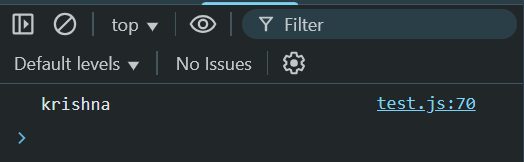

The toLowerCase() method is used to convert any uppercase string to lower case.
const str = "KRISHNA"
console.log(str.toLowerCase())

The toUpperCase() method is used to convert any lowercase string to upper case.
const str = "radha"
console.log(str.toUpperCase())
The replace(old_string, new_string) method is used for replacing a particular string to a new string.
const str = "krishna krishna"
console.log(str.replace("krishna","radhe"))
Note: It only replace the first string.
The replaceAll(old_string, new_string) method is used for replacing all matching string to the new string.
const str = "krishna krishna"
console.log(str.replaceAll("krishna","radhe"))
The padStart(value, string)
const mobile = "6500"
console.log(mobile.padStart(10,"*"))
console.log(mobile.padStart("10","*"))
Summery of Methods
|
|